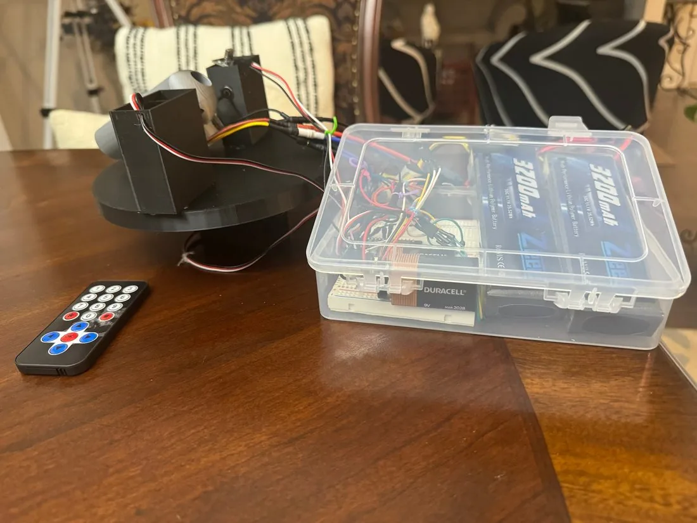

Precision ball launcher
| Context | School engineering project |
|---|---|
| Dates | 2025 |
A compression-wheel launcher built as a group project for a school engineering class. The goal: shoot a ½-inch ball 10 to 20 feet into specific windows in a target array, aimed by remote control.

The launcher drives a ball between compression wheels, with the electronics housed in an enclosure below the mechanism. Accuracy came from matching wheel speed to the compression the ball actually experiences, which meant tuning the gap and the speed together rather than one at a time.
Design and prototyping
We designed six prototypes and the final launcher in OnShape, testing compression wheel diameter and thickness, barrel length and width, launch distance and launch force across them. For the wheels themselves we compared materials and settled on thermoplastic polyurethane (TPU), whose flexibility let the wheels grip the ball without crushing it.
Electronics and control
Two brushless motors spin the compression wheels, and two servos aim the launcher left and right and up and down, all controlled with an infrared remote. The system runs on an ESP32, programmed in the Arduino IDE.
Power was the hardest problem. We could not deliver enough wattage to the brushless motors while staying around 9 volts, so we moved to LiPo batteries. Getting the connections between the batteries, motors and ESCs right took research and careful soldering.
My role
I worked on design, material selection, research, manufacturing and testing, and handled all of the electronics and wiring.